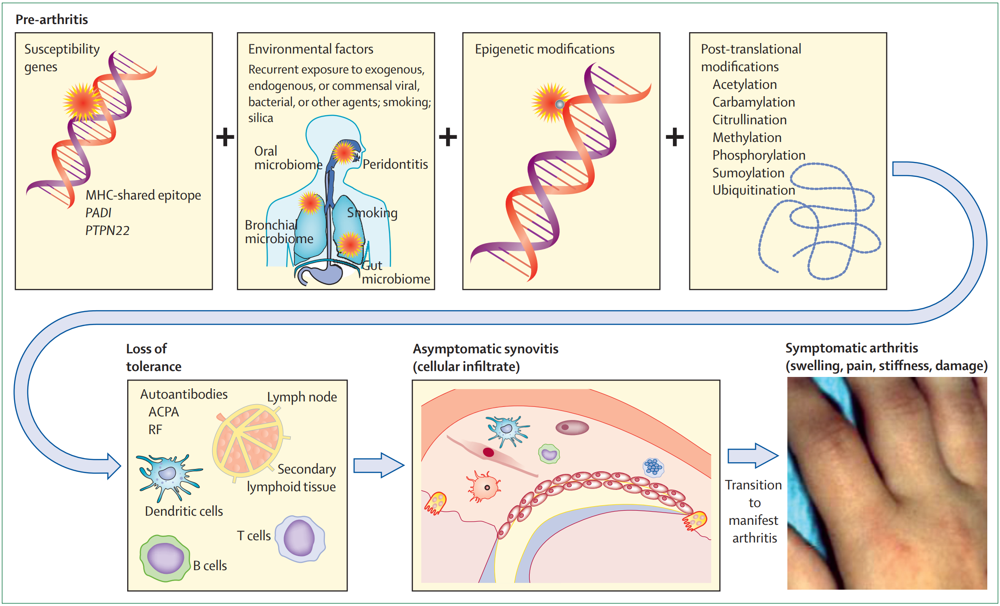
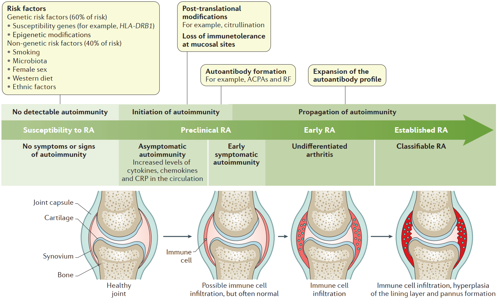
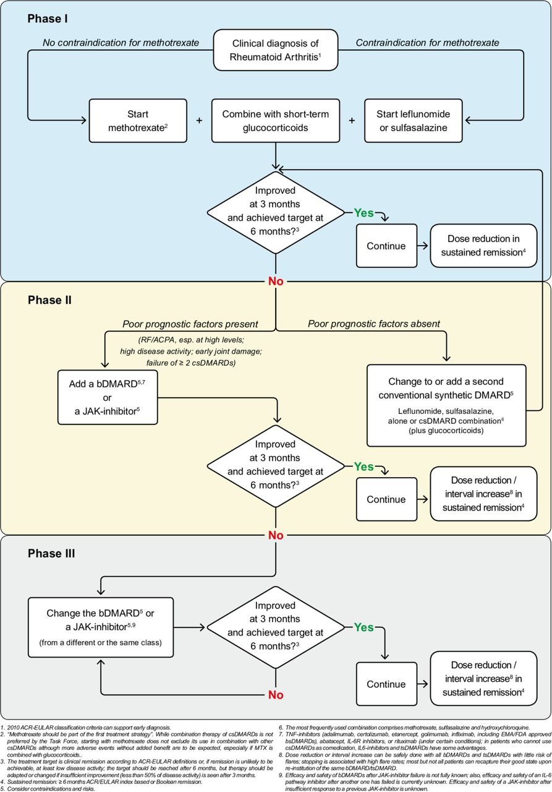
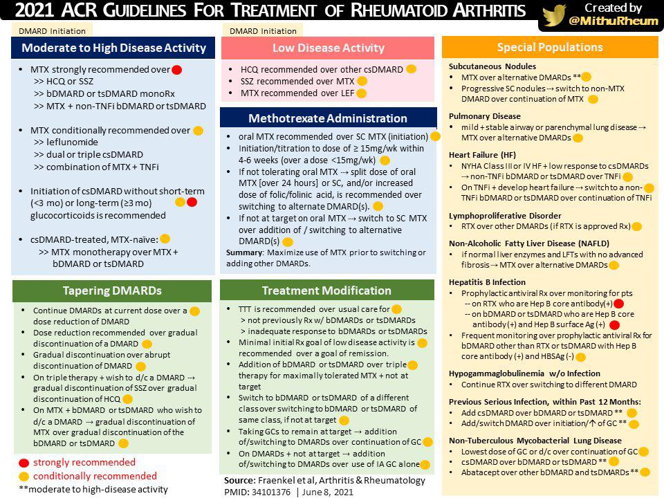
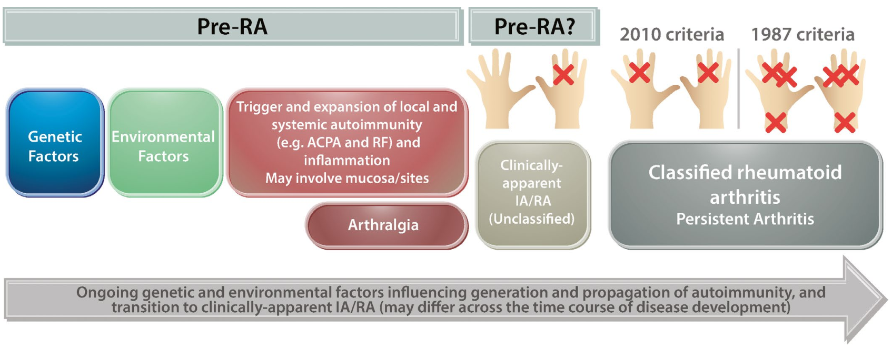
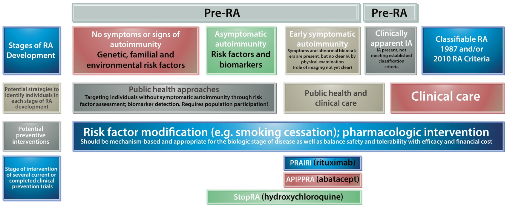

Rheumatoid Arthritis
류마티스관절염은 항CCP항체와 같은 자가항체를 동반하는 자가면역질환으로 관절손상이 일어나는 대표적인 근골격계 만성 염증성 면역 질환이다.
1. 역학 및 발병 인자
1-1. 역학
| 전세계 | 국내 | |
|---|---|---|
| 성비 | 여성 > 남성 (3배) | |
| 주 발병 연령 | 40대~70대 | |
| 유병률 | 0.3~1% | 1.4% |
| 발병률 | 5~50명/10만 명 | 42명/10만 명 |
1-2. 위험 요인

* 감수성 유전자를 가지고 있어서 유전적 소인이 있는 사람이 환경적 손상, 후성유전적 변이, 번역후 수정 (post-translational modification)을 겪게 되면 면역 관용 (tolerance)를 잃게 되고, 이후에 무증상 활막염을 거쳐 궁극적으로는 임상적으로 분명한 관절염을 앓게 된다.
| 요인 | 분류 | 항목 |
|---|---|---|
| 유전적 요인 | HLA-Related | HLA-DRB1이 가장 위험한 인자 (11% 정도의 유전적 기여) → \*04:05 (동양), \*04:01 (서양), \*09:01 (한국, 일본 등 아시아) → 한국인은 \*04:05와 \*09:01의 강력한 연관관계가 있음. |
| Non-HLA | PADI4, STAT4, PTPN22, TRAF1-C5 등 | |
| 환경적 요인 | Favorable | 에스트로겐, 여성호르몬복용, 비타민D, 오메가3 |
| Non-favorable | 흡연, 치주염, 장내세균, 감염 (EBV, Parvovirus B19), 하루 10잔 이상의 커피소모, 조기폐경, 경구피임약 사용, 비만, Low socioeconomical state |
2. 병인기전 및 발생

- 가동관절 (Diarthrodial joint)의 활막조직에 일차적으로 염증 발생 → 활막 증식 → 연골 및 뼈 손상 → 인대, 힘줄, 관절낭, 근육의 손상, 약화, 불균형 발생
- RA에 susceptibility가 있는 (유전+환경+면역)개인에게서 어떤식으로든 autoantibody가 형성되면 명백한 'arthritis' 까지는 아니더라도 'arthralgia'를 호소하는 상태가 발생하는데, 이 때를 Pre-RA라고 할 수 있을 것이다. 이 상태가 지속되면 Inflammatory 'Arthritis'로 진행될텐데, 이후에 이런 상태가 더 진행되면 분류기준에 따라 임상적으로 RA로 분류할 수 있다.
3. 임상증상
3-1. 조기 관절 증상
- 수주 ~ 수개월에 걸쳐 서서히 나타나는 여러 관절의 tenderness, stiffness, swelling
- 단관절의 반복적 or 이동성 관절침범 (Recurrent & migratory) : 수시간~수일 동안 증상이 있다가 소실 후 수개월 후 비슷한 증상이 재발하는 재발류마티즘 (palindromic rheumatism)도 발생
- 1시간 이상의 조조강직 (Morning stiffness)
3-2. 조기 관절 외 증상
- General ache, stiffness, CTS, BW loss, depression, fatigue, etc.
3-3. 관절증상
- Wrist, MCP, MTP, PIP를 주로 침범, Elbow, Shoulder, Ankle, Knee, Hip joint도 침범한다.
- 장기간 지속된 RA환자는 C1~2를 침범하여 Atlantoaxial subluxation이 유발되기도 한다.
- C1~2 이외 다른 axial spine에 직접적으로 침범하지는 않는다.
만약 RA환자가 back pain을 호소한다면 Sprain, HNP, Spinal Stenosis, fracture 등의 다른 원인을 감별한다. - 이외 AC joint, SC joint, TMJ, Cricoarytenoid joint도 involve
- 초기의 중요한 소견은 침범된 관절의 tenderness와 swelling
- 이외 Hand grip strength의 감소, Trigger finger, CTS 증상도 발생 가능
- 더 진행하면 Ulnar drift, swan neck, Boutonniere deformities, Digital infarction (d/t vasculitis), radial drift 등의 관절 변형 증상이 나타날 수 있다.
3-4. 관절 외 증상
| System | 증상 |
|---|---|
| 전신증상 | 전신통증, 뻣뻣함, 미열, 체중감소, 피로감, 우울감 |
| CV | myocarditis, myositis, CAD 등 |
| PD | Interstitial pneumonitis (UIP, NIP), organizing pneumonia (OP, BOOP, COP), Caplan's syndrome (pneumoconiosis + multiple peripheral basilar nodule), pleuritis (RA or MTX or Leflunomide) |
| KD&URO | Focal GN, MN |
| HD | Felty's syndrome (neutropenia, thrombocytopenia, splenomegaly), ACD, DLBCL |
| NR | compressive myelopathy, mononeuritis multiplex |
| Skin | rheumatoid nodule (elbow), skin ulcer |
| EYE/Ent | 상공막염, 공막염, ulcerative keratitis, keratoconjunctivitis sicca (10~20%) |
| Vascular | 주로 small ~ medium sized vessel : PAN과 유사한 양상 |
| Muscular | synovitis, myositis, vasculitis, drug-induced myopathy |
| Skeletal | Bone loss, osteoporotic fracture & hip fracture |
4. 검사소견과 진단
4-1. 혈액검사
- RF : 정상인의 5%에서 양성, 65세 이상일 때 10~15%에서 양성, 고역가일 때 extra-articular manifestation 많아 예후 예측에 도움이 된다.
- Anti-CCP : RA에 특이적, 질환 발병 수년 전부터 양성으로 나옴, 양성일 때 관절 파괴가 더 많이 진행, 흡연과 고역가가 연관이 있음.
- CRP, ESR : 예후와 연관, 지속적 상승은 질병의 지속적인 진행으로 인한 방사선적 진행과 상관관계 있음.
4-2. 방사선검사
- X-ray : 대칭적인 관절 침범 및 미란 (Hand → foot → knee → hip → neck → shoulder → elbow), 주로 MCP, PIP에서 잘 보임.
- MSUS : 초기에 2nd MCP, 5th MTP에서 erosion이 잘 발견됨
- MRI 도 있지만 잘 안찍는다.
4-3. 분류기준
-
1987 Criteria : 다소 진행된 형태의 RA를 진단할 때 유용함.
-
2010 Criteria : 조기에 분류(진단)해서 관절파괴가 일어나기 전에 적절히 치료하여 치료 성과를 높이려는 목적.
1987 ACR RA classification criteria
| For classification purposes, a patient has RA if at least four of these criteria are satisfied (the first four must have been present for at least six weeks). |
|
| Criterion | Definition |
|---|---|
| Morning stiffness | Morning stiffness in and around the joints, lasting at least one hour before maximal improvement. |
| Arthritis of three or more joint areas | At least three joint areas (out of 14 possible areas; right or left PIP, MCP, wrist, elbow, knee, ankle, MTP joints) simultaneously have had soft tissue swelling or fluid (not bony overgrowth alone) as observed by a physician. |
| Arthritis of hand joints | At least one area swollen (as defined above) in a wrist, MCP, or PIP joint. |
| Symmetric arthritis | Simultaneous involvement of the same joint areas (as defined above) on both sides of the body (bilateral involvement of PIPs, MCPs, or MTPs, without absolute symmetry is acceptable). |
| Rheumatoid nodules | Subcutaneous nodules over bony prominences or extensor surfaces, or in juxta-articular regions as observed by a physician. |
| Serum rheumatoid factor | Demonstration of abnormal amounts of serum rheumatoid factor by any method for which the result has been positive in less than 5 percent of normal control subjects. |
| Radiographic changes | Radiographic changes typical of rheumatoid arthritis on posteroanterior hand or wrist radiographs, which must include erosions or unequivocal bony decalcification localised in, or most marked adjacent to, the involved joints (osteoarthritis changes alone do not qualify). |
| 분류목적으로, 환자가 RA가 있다고 하려면 이 기준 중 최소 4개를 만족해야 한다. (첫 네 항목은 반드시 최소 6주는 존재해야 한다.). |
|
| 기준 | 정의 |
|---|---|
| 조조강직 | 조조강직이 관절 내부와 주변부에 있으며, 가장 좋아질 떄 까지 최소한 1시간은 지속된다. |
| 3개 이상 관절부위의 관절염 | 최소 3개 이상 관절부위 (14개의 가능한 부위: Both PIP, MCP, wrist, elbow, knee, ankle, MTP joints)에 연부조직 부종이나 관절액 (뼈 융기만 있어서는 안됨)이 의사에 의해 관찰됨. |
| 손가락 부위 관절의 관절염 | wrist, MCP, PIP 관절 중 최소한 한 개 부위는 부어있어야 함. (부종은 위 항목에서 정의됨) |
| 대칭적 관절염 | 2번에 정의된 관절을 양측성으로 동시에 침범 (PIP, MCP, Wrist, MTP는 완전 대칭이 아니어도 가능함) |
| 류마티스결절 | 뼈가 튀어나온 부위나 폄근 표면 위, 또는 관절 주변에 피하 결절이 의사에 의해 관찰됨. |
| 혈청 류마티스 인자 양성 | 비정상적인 양의 혈청 류마티스 인자가 정상 대조군의 5% 미만에서 양성 반응이 나온 방법(종류에 상관 없이)을 사용해서 확인되는 경우 |
| 영상의학적 변화 | 손이나 손목의 PA 영상검사에서 전형적인 류마티스관절염의 영상의학적 변화가 보이는 경우로, 침범된 관절 내 혹은 인접한 부위에 골미란이나 균일하지 않은 골 탈석회화가 반드시 포함되어야 함. (골관절염 변화 단독만으로는 해당되지 않음). |
2010 ACR/EULAR RA classification criteria
| Target population (Who should be tested?): Patients who | |
|---|---|
| 1. Have at least one joint with definite clinical synovitis (swelling) | |
| 2. With the synovitis not better explained by another disease† | |
| Note | |
| The criteria are aimed at classification of newly presenting patients. In addition, patients with erosive disease typical of rheumatoid arthritis (RA) with a history compatible with prior fulfillment of the 2010 criteria should be classified as having RA. Patients with longstanding disease, including those whose disease is inactive (with or without treatment) who, based on retrospectively available data, have previously fulfilled the 2010 criteria should be classified as having RA. | |
| †Differential diagnoses vary among patients with different presentations but may include conditions such as systemic lupus erythematosus, psoriatic arthritis, and gout. If it is unclear about the relevant differential diagnoses to consider, an expert rheumatologist should be consulted. | |
| ACR/EULAR Classification criteria for RA | |
|---|---|
| A. Joint involvement§ | Score |
| 1 large joint∥ | 0 |
| 2–10 large joints | 1 |
| 1–3 small joints (with or without involvement of large joints)¶ | 2 |
| 4–10 small joints (with or without involvement of large joints) | 3 |
| >10 joints (at least 1 small joint) | 5 |
| B. Serology (at least 1 test result is needed for classification)†† | Score |
| Negative RF and negative ACPA | 0 |
| Low-positive RF or low-positive ACPA | 2 |
| High-positive RF or high-positive ACPA | 3 |
| C. Acute-phase reactants (at least 1 test result is needed for classification)‡‡ | Score |
| Normal CRP and normal ESR | 0 |
| Abnormal CRP or abnormal ESR | 2 |
| D. Duration of symptoms§§ | Score |
| <6 weeks | 0 |
| ≥6 weeks | 1 |
| Note | |
| ‡Although patients with a score of 6 of 10 are not classifiable as having RA, their status can be reassessed, and the criteria might be fulfilled cumulatively over time. | |
| §Joint involvement refers to any swollen or tender joint on examination, which may be confirmed by imaging evidence of synovitis. Distal interphalangeal joints, first carpometacarpal joints, and first metatarsophalangeal joints are excluded from assessment. Categories of joint distribution are classified according to the location and number of involved joints, with placement into the highest category possible based on the pattern of joint involvement. | |
| ∥“Large joints” refers to shoulders, elbows, hips, knees, and ankles. | |
| ¶“Small joints” refers to the metacarpophalangeal joints, proximal interphalangeal joints, second through fifth metatarsophalangeal joints, thumb interphalangeal joints, and wrists. | |
| In this category, at least one of the involved joints must be a small joint; the other joints can include any combination of large and additional small joints, as well as other joints not specifically listed elsewhere (e.g., temporomandibular, acromioclavicular, sternoclavicular). | |
| ††Negative refers to IU values that are less than or equal to the upper limit of normal (ULN) for the laboratory and assay; low-positive refers to IU values that are higher than the ULN but ≤3 times the ULN for the laboratory and assay; high-positive refers to IU values that are ≥3 times the ULN for the laboratory and assay. When rheumatoid factor (RF) information is only available as positive or negative, a positive result should be scored as low positive for RF. | |
| ‡‡Normal and abnormal are determined by local laboratory standards. | |
| §§Duration of symptoms refers to patient self-report of the duration of signs or symptoms of synovitis (e.g., pain, swelling, tenderness) of joints that are clinically involved at the time of assessment regardless of treatment status. | |
| 대상 집단(누가 검사를 받아야 합니까?): 환자들 중 | |
|---|---|
| 1. 적어도 하나의 관절에 확실한 임상 활막염(종창)이 있음 | |
| 2. 다른 질환으로 더 잘 설명되지 않는 활막염† | |
| Note | |
| 이 기준은 새로 내원하는 환자를 분류하기 위한 것이다. 또한, 환자가 류마티스관절염(RA)의 전형적인 골미란성 질환을 보이면서 2010년 분류기준을 충족할 만한 이전의 병력이 있었다면 RA가 있는 것으로 분류해야 한다. 환자가 장기간 질병이 있는 경우, 질병이 비활성(치료 유무에 관계없이)인 환자를 포함하여, 후향적으로 이용 가능한 데이터에 기초하여 이전에 2010년 기준을 충족한 환자들도 RA가 있는 것으로 분류되어야 한다. | |
| †감별 진단은 서로 다른 증상을 보이는 환자들마다 다양할 수 있는데, 전신성 홍반성 루푸스, 건선성 관절염 및 통풍과 같은 질환을 포함할 수 있다. 고려해야 할 감별진단이 불확실한 경우에는 경험이 많은 류마티스전문의와 상의해야 한다. | |
| 환자가 명확한 RA가 있다고 분류하기 위해서는 10점 중 6점 이상이 있어야 한다. | |
|---|---|
| A. Joint involvement§ | Score |
| 1 large joint∥ | 0 |
| 2–10 large joints | 1 |
| 1–3 small joints (with or without involvement of large joints)¶ | 2 |
| 4–10 small joints (with or without involvement of large joints) | 3 |
| >10 joints (at least 1 small joint) | 5 |
| B. Serology (at least 1 test result is needed for classification)†† | Score |
| Negative RF and negative ACPA | 0 |
| Low-positive RF or low-positive ACPA | 2 |
| High-positive RF or high-positive ACPA | 3 |
| C. Acute-phase reactants (at least 1 test result is needed for classification)‡‡ | Score |
| Normal CRP and normal ESR | 0 |
| Abnormal CRP or abnormal ESR | 2 |
| D. Duration of symptoms§§ | Score |
| <6 weeks | 0 |
| ≥6 weeks | 1 |
| Note | |
| ‡환자가 10점 중 6점 미만인 경우 RA로 분류할 수는 없으나, 환자의 상태를 재평가할 수 있고, 이 분류기준은 시간이 지남에 따라 누적적으로 충족될 수 있다. | |
| §관절 침범은 검사상 부어 오르거나 압통이 있는 관절을 말하며, 이는 활막염의 영상 증거로 확인할 수 있다. DIP, 1st CMC, 1st MTP joint는 평가에서 제외한다. 관절 분포의 범주는 침범된 관절의 위치와 수에 따라 분류되며, 관절 침범 패턴에 따라 가능한 가장 높은 범주에 배치된다. | |
| ∥'큰관절'은 어깨, 팔꿈치, 엉덩이, 무릎, 발목관절을 뜻한다. | |
| ¶'작은 관절'은 MCP, PIP, 2~5th MTP, Thumb IP, wrists를 뜻한다. | |
| 이 범주에서, 침범된 관절 중 최소 1개는 작은관절이어야 한다; 다른 관절은 큰관절과 추가적인 작은관절이 혼합되어 침범되어도 되고 이 분류기준에서 명시되지 않은 다른 관절 또한 포함된다. (e.g. TMJ, AC, SC joint) | |
| ††Negative refers to IU values that are less than or equal to the upper limit of normal (ULN) for the laboratory and assay; low-positive refers to IU values that are higher than the ULN but ≤3 times the ULN for the laboratory and assay; high-positive refers to IU values that are ≥3 times the ULN for the laboratory and assay. When rheumatoid factor (RF) information is only available as positive or negative, a positive result should be scored as low positive for RF. | |
| ‡‡Normal and abnormal are determined by local laboratory standards. | |
| §§Duration of symptoms refers to patient self-report of the duration of signs or symptoms of synovitis (e.g., pain, swelling, tenderness) of joints that are clinically involved at the time of assessment regardless of treatment status. | |
4-4. 감별진단
| DDx. | 감별질환의 특징 (감별포인트) |
|---|---|
| OA | DIP 침범, Heberden nodule, morning stiffness < 30min, X-ray상 JSN |
| Palindromic rheumatism | migratory arthralgia (Behcet's ds.와도 감별하자) |
| FMS | no arthritis/synovitis, no APR elevation, Tender point 유무 등 |
| Seronegative RA | 향후 RF/ACPA 양성 여부 경과관찰 |
| Reactive arhritis | 선행하는 urogenital/enteric invection + Sacroilitis + HLA-B27 (+) 유무, Dactylitis 등 |
| Psoriatic arthritis | 피부/손톱변화, 소시지손가락 (dactylitis), 척추침범, 절단관절염 (arthritis mutilans) |
| Crystalopathies | uric acid level, medication, attack 양상 등 |
| Infection-associated | Parvovirus, HBV, HCV, Mumps, EBV등 |
5. 치료
5-1. EULAR 용어 및 정의
| Glossary and Definition | ||
| Term | Definition | |
|---|---|---|
| Poor prognostic factors | Persistently moderate or high disease activity despite conventional synthetic DMARD (csDMARD) therapy according to composite measures including joint counts | |
| High acute phase reactant levels | ||
| High swollen joint count | ||
| Presence of RF and/or ACPA, especially at high levels | ||
| Presence of early erosions | ||
| Failure of two or more csDMARDs | ||
| Low-dose glucocorticoids | <7.5 mg/day (prednisone equivalent) | |
| Tapering | Reduction of drug dose or increase of application interval | |
| May include cessation (tapering to 0), but then only after slow reduction | ||
| Cessation, stopping | Stopping of a particular drug | |
| Disease activity states | ||
| Remission | ACR-EULAR remission definition (Boolean or index based) | |
| Low disease activity | Low disease activity state according to any of the validated composite disease activity measures that include joint counts | |
| Moderate, high disease activity | Respective disease activity state according to any of the validated composite disease activity measures that include joint counts | |
| DMARD nomenclature | ||
| Synthetic DMARDs | csDMARDs | Eg, methotrexate, leflunomide, sulfasalazine, hydroxychloroquine |
| Targeted synthetic DMARDs | Eg, baricitinib, tofacitinib, upadacitinib | |
| Biological DMARDs | Biological originator DMARDs | TNFi: adalimumab, certolizumab, etanercept, golimumab, infliximab; IL-6Ri: sarilumab, tocilizumab; |
| Costimulation-i: abatacept; anti-B cell (CD20): rituximab | ||
| Biosimilar DMARDs | (currently for: adalimumab, etanercept, infliximab, rituximab) | |
5-2. 일반적인 치료 원칙
- MTX의 금기가 없다면 MTX를 우선 처방하고, MTX 처방이 어려울 때 (금기 혹은 intolerance) leflunomide나 SSZ를 처방한다.
- MTX의 금기 : 임신, 임신 예정, 심한 간손상/콩팥손상
- MTX의 intolerance : GI trouble, Alopecia, Cytopenia 등
- short term GC를 추가해 볼 수도 있으며, GC는 되도록 최소 용량 (PRD < 10mg)을 사용한다.
- DAS28-CRP를 평가해서 3개월 후에 호전되고 6개월째에 Remission에 도달하는지 확인한다.
- (Worse) Prognostic factor를 평가하여, 해당 항목이 있다면 bDMARD 또는 JAK-I를 추가하고 3~6개월째에 평가한 후, 효과가 없으면 다른 약리 기전을 가진 약물로 바꿔본다.
- Prognostic factor : high Antibody titer, high ds. activity, early joint damage, csDMARDs 2개에 fail
- 효과가 있다면 약제를 유지하고, 장기간 잘 유지된다면 서서히 용량을 감량해 볼 수는 있으나 DMARDs를 중단하지 않는다.
5-3. EULAR Guideline (2019)

5-4. ACR Guideline (2021)

5-5. Associated conditions
6. 질병활성도 평가
| Disease activity measure | Scale | Remission | Low/minimal | Moderate | High/severe |
|---|---|---|---|---|---|
| [Patient-driven composite tools] : 환자가 평가 | |||||
| PAS | 0–10 | 0.00–0.25 | 0.26–3.70 | 3.71 to <8.0 | 8.00–10.00 |
| PAS-II | 0–10 | 0.00–0.25 | 0.26–3.70 | 3.71 to <8.0 | 8.00–10.00 |
| RAPID-3 | 0–10 | 0–1.0 | >1.0 to 2.0 | >2.0 to 4.0 | >4.0 to 10 |
| [Patient and provider composite tool] : 환자와 치료자가 평가 | |||||
| CDAI | 0–76 | ≤2.8 | >2.8 to 10.0 | >10.0 to 22.0 | >22.0 |
| [Patient, provider, and laboratory composite tools] : 환자와 치료자가 평가하고 lab 반영 | |||||
| DAS28 (ESR or CRP) |
0–9.4 | <2.6 | ≥2.6 to <3.2 | ≥3.2 to ≃5.1 | >5.1 |
| SDAI | 0–86 | ≤3.3 | >3.3 to ≤11.0 | >11.0 to ≤26 | >26 |
- PAS, PAS-II, RAPID-3는 환자가 작성하는 설문지로 구성되어 있다.
- 일반적으로 DAS28 (ESR or CRP), SDAI, CDAI가 사용되며, 우리나라 보험 기준상 DAS28-CRP를 가장 많이 사용한다.
- RA의 DAS (Disease Activity Score)는 원래 44개의 관절을 가지고 평가를 하는 것이었는데, 무릎 아래 관절을 제외한 28개 관절을 가지고 평가를 하는 것이 DAS28이다.
- 그렇다고 하여, RA에서 MTP 관절 침범이 중요하지 않는 것은 결코 아니다.
- ACR/EULAR의 remission 기준은 SDAI ≤3.3 이다.
7. 경과와 예후

-
RA가 발생할 만한 소인 (유전+환경+면역)이 있는 사람이 Pre-RA에서 RA로 점차 진행한다는 것이 최근의 RA 발생 개념이다. 예방을 위해서는 '소인'을 조절하면 된다.
-
그런데 현실적으로 유전이나 면역 요인을 어떻게 해 볼 방도가 없다.
 -
유전/환경적 요인을 미리 발견할 수 있는 biomarker가 있다면 참 좋겠지만, 현실적으로 어렵고 그나마 해 볼만한 것이 smoking cessation과 같은 환경요소를 조절하거나 조기에 발견하여 빠르게 치료하는 것이다.
Last update: November 1, 2021